Europe Summer
Photo Trip
Country
United Kingdom
France
Belgium
Netherlands
Germany
Italy
Switzerland
Austria
Main City
London
Paris
Amsterdam
Cologne
Vienna
Bruges
Genre
Train / Station
Cathedral
Foods
Nature
Best Photo
Country
United Kingdom
France
Belgium
Netherlands
Germany
Italy
Switzerland
Austria
Main City
Genre
Best Photo
York
- City Infomation -
ヨークについて
ヨークの説明
Spot's
York Minster
ヨークミンスターの説明
York Old Town
ヨーク旧市街の説明
Map
Photo Gallery
Next Visit ?
London
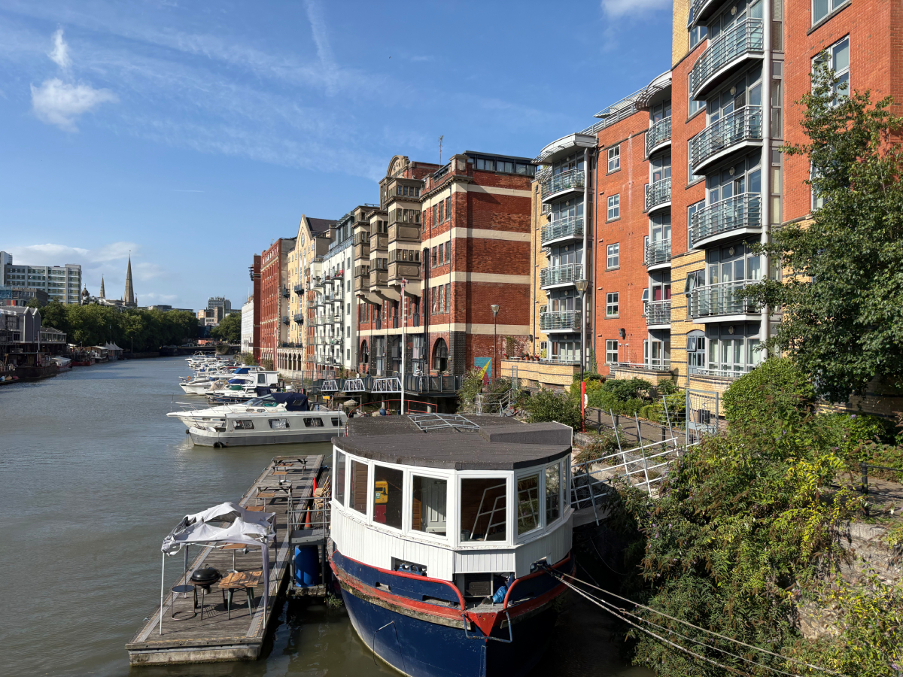
Bristol
York
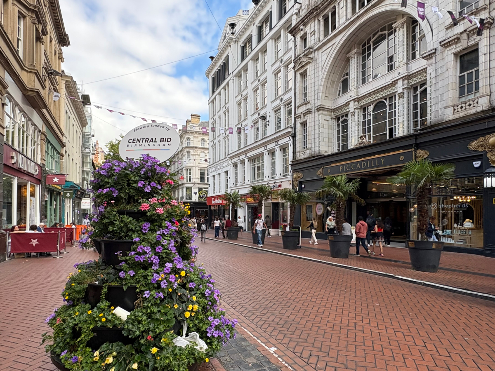
Birmingham
Manchester
Newcastle
Durham
Edinburgh
Bristol
Plymouth
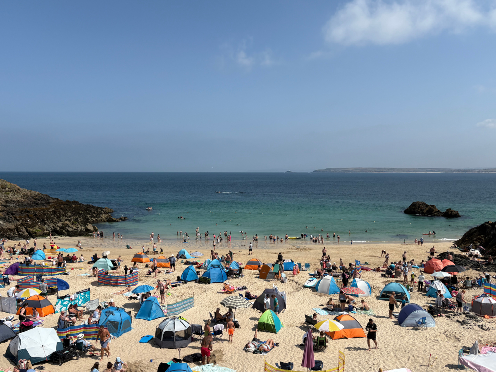
St Ives
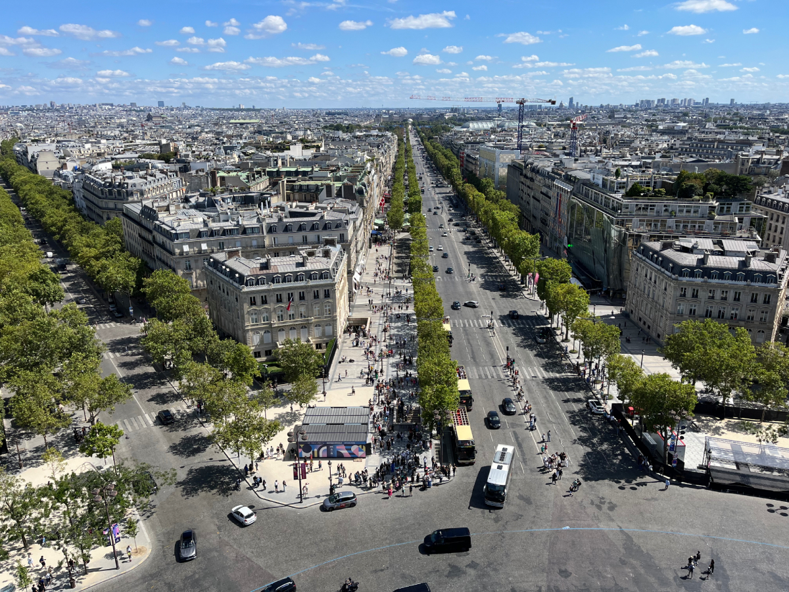
Paris
Lyon
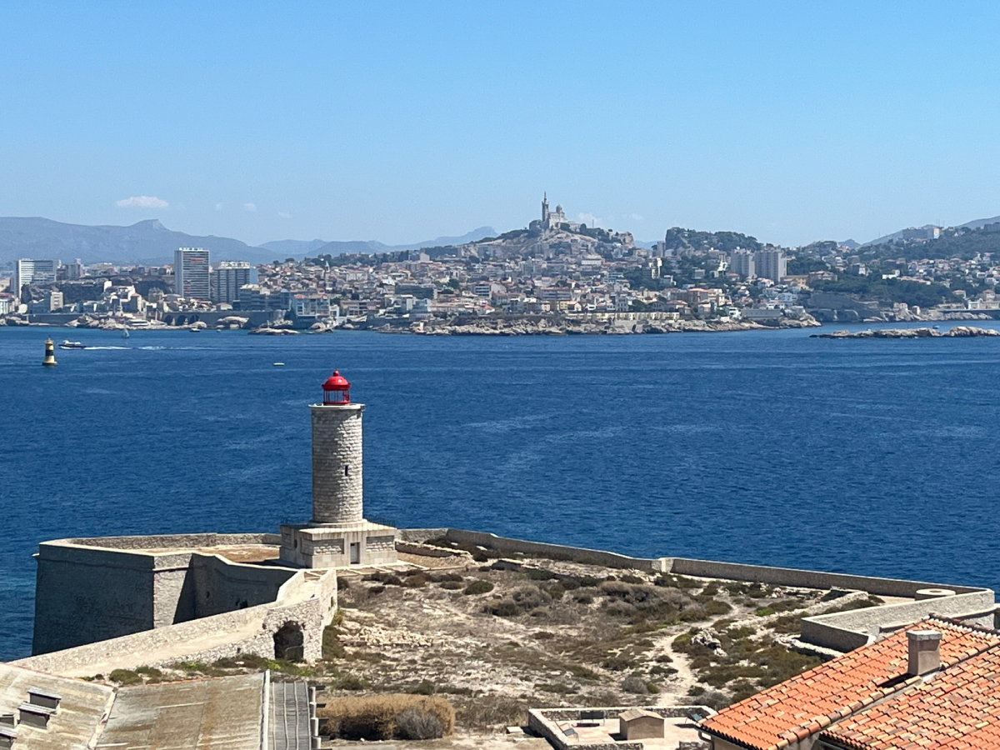
Marseille
Amsterdam
Cologne
Zurich
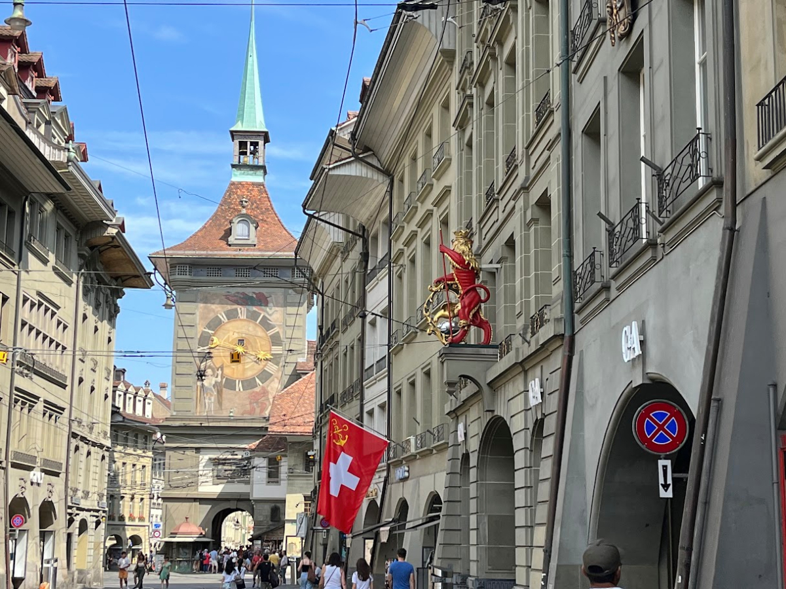
Bern
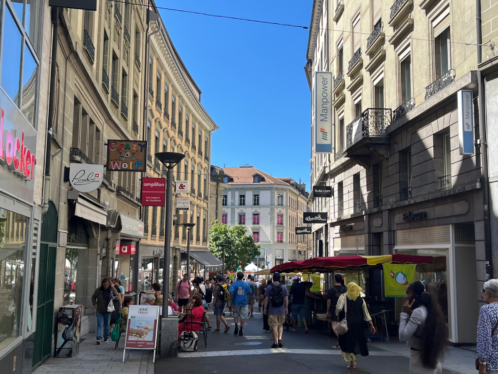
Lausanne
Geneve
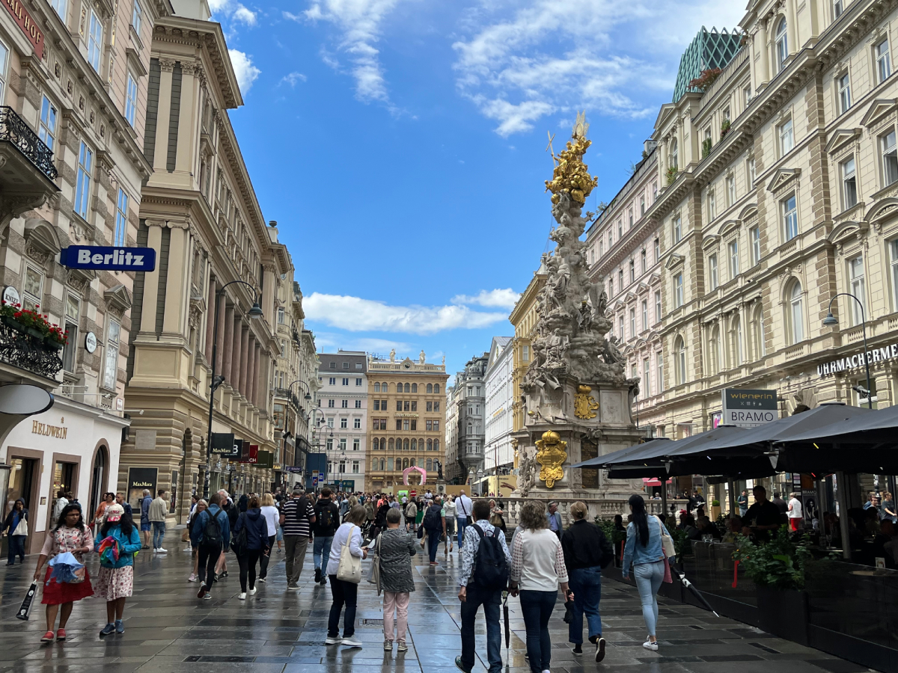
Vienna
Salzburg
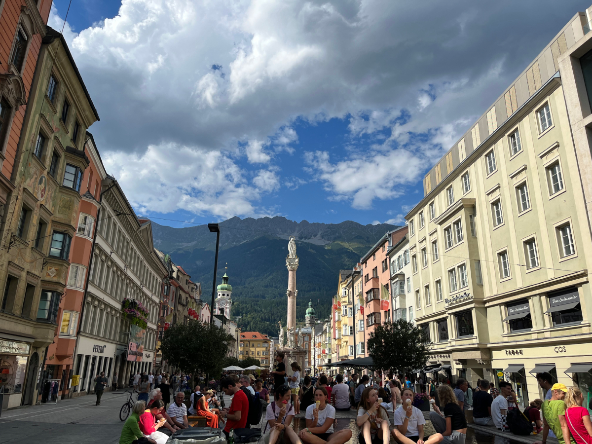
Innsbruck
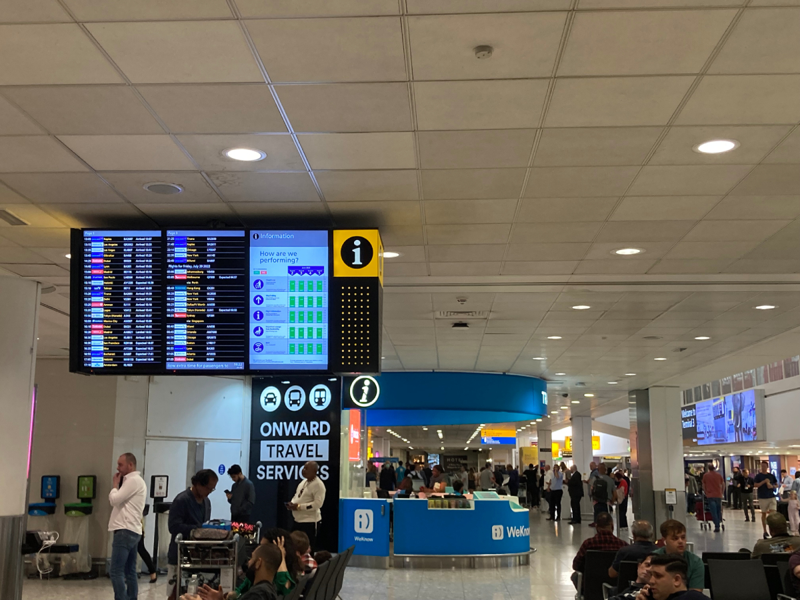
✈
Heathrow
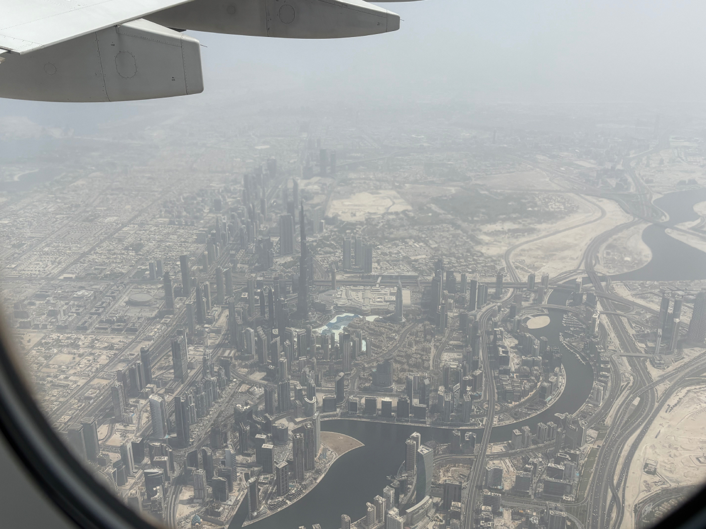
Dubai